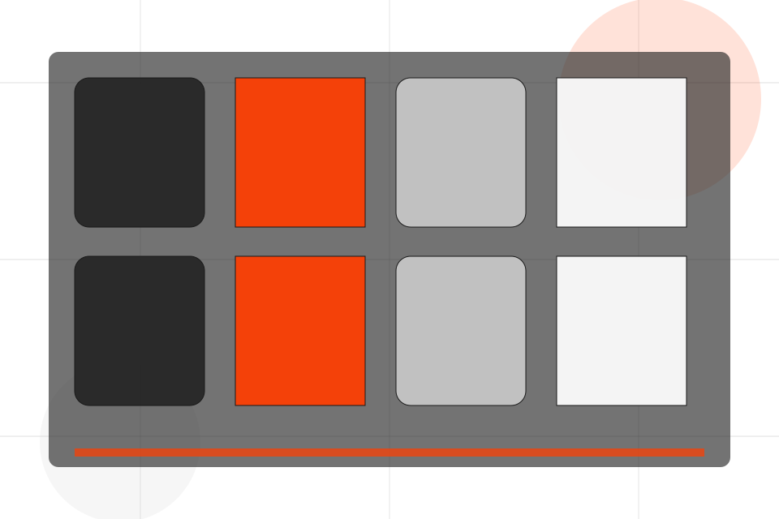
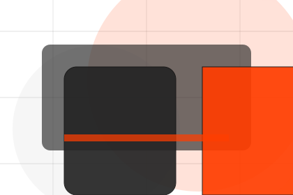
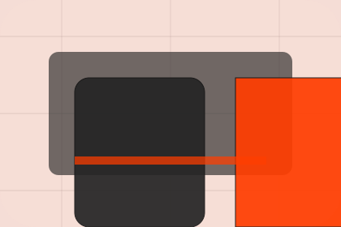

Results / 01
Results by Pulse
Results shaped for sports, fitness & recreation decisions.
Results opens as a clear sports decision hub: what Pulse offers, who it helps, why it matters, and which route to take first.
The first screen combines positioning, proof, primary action, and fast internal navigation, so people can act immediately or compare the rest of the results route with context.
Sports scopeCompare optionsRequest advice

Results / 02
Transformations visitors can see
Transformations shows what changes after the work: clearer decisions, visible progress, and proof points that connect the offer to real outcomes.
The layout connects before-and-after thinking with measured outcomes, making the result easy to scan without promising what the business cannot guarantee.
Explore ResultsPulse structures transformations around before, after, and a clear next route so visitors can compare the block quickly before they join a class.
Join ClassResults / 04
Metrics visitors can see
Metrics shows what changes after the work: clearer decisions, visible progress, and proof points that connect the offer to real outcomes.
The layout connects before-and-after thinking with measured outcomes, making the result easy to scan without promising what the business cannot guarantee.
Explore ResultsBefore
The uncertainty, delay, or missed opportunity visitors bring into metrics.
After
The clearer, safer, or more valuable state Pulse is designed to support.

Proof
The visible cue that connects metrics to a believable decision, not a loose claim.
Results / 05
Reviews visitors can see
Reviews shows what changes after the work: clearer decisions, visible progress, and proof points that connect the offer to real outcomes.
The layout connects before-and-after thinking with measured outcomes, making the result easy to scan without promising what the business cannot guarantee.
Explore ResultsThe uncertainty, delay, or missed opportunity visitors bring into reviews.
The clearer, safer, or more valuable state Pulse is designed to support.
The visible cue that connects reviews to a believable decision, not a loose claim.
Results / 06
Consistency visitors can see
Consistency shows what changes after the work: clearer decisions, visible progress, and proof points that connect the offer to real outcomes.
The layout connects before-and-after thinking with measured outcomes, making the result easy to scan without promising what the business cannot guarantee.
Explore Results- 01
Before
The uncertainty, delay, or missed opportunity visitors bring into consistency.
- 02
After
The clearer, safer, or more valuable state Pulse is designed to support.
- 03
Proof
The visible cue that connects consistency to a believable decision, not a loose claim.
Results / 07
Expectations visitors can see
Expectations shows what changes after the work: clearer decisions, visible progress, and proof points that connect the offer to real outcomes.
The layout connects before-and-after thinking with measured outcomes, making the result easy to scan without promising what the business cannot guarantee.
Explore ResultsPulse structures expectations around before, after, and a clear next route so visitors can compare the block quickly before they join a class.
Join ClassResults / 08
Proof visitors can see
Proof shows what changes after the work: clearer decisions, visible progress, and proof points that connect the offer to real outcomes.
The layout connects before-and-after thinking with measured outcomes, making the result easy to scan without promising what the business cannot guarantee.
Explore ResultsThe uncertainty, delay, or missed opportunity visitors bring into proof.
The clearer, safer, or more valuable state Pulse is designed to support.
The visible cue that connects proof to a believable decision, not a loose claim.
Results / 09
Motivation visitors can see
Motivation shows what changes after the work: clearer decisions, visible progress, and proof points that connect the offer to real outcomes.
The layout connects before-and-after thinking with measured outcomes, making the result easy to scan without promising what the business cannot guarantee.
Explore ResultsBefore
The uncertainty, delay, or missed opportunity visitors bring into motivation.
After
The clearer, safer, or more valuable state Pulse is designed to support.
Proof
The visible cue that connects motivation to a believable decision, not a loose claim.
Results / 10
Join Class
Pulse closes the results route with a clear action, a quick reminder of the value, and a low-friction way to join a class.
Visitors who are ready can use the primary action. Visitors who are still comparing can scan the section links, proof, and support routes before they join a class.
Join ClassThe final block keeps the choice simple: act now, compare one more proof route, or send enough detail for a focused response.
Join Classprogress and belonging
Join Class
A fitness site with athlete-scale hero, program cards, coach proof, schedule filters, and membership CTAs. Results ends with a direct path to join a class, plus enough context for visitors who still need to compare.

Join ClassImportant notes before you act
Fitness guidance should be adapted to health status and professional advice where needed.